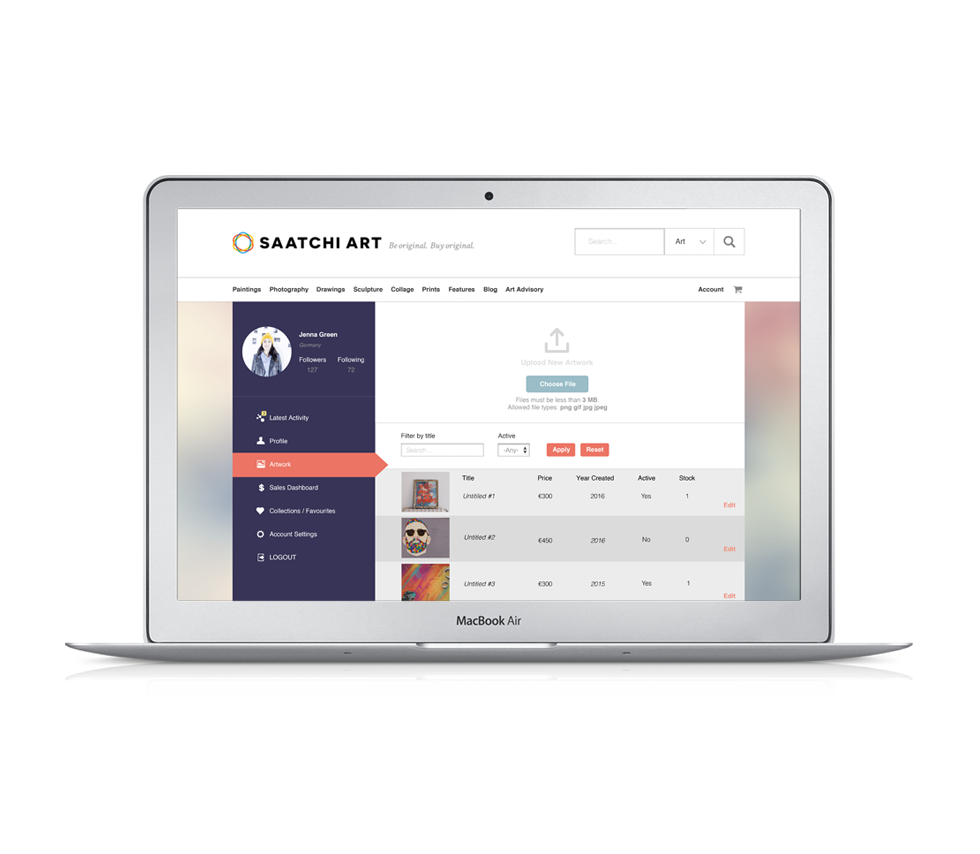

As a user of Saatchi Online, I wanted to redesign the artist/collector dashboard, so the content is easier to access for the user.
As it is an art site, the dashboard has been built more visually. I wanted to create a dashboard with a simple yet practical design, as well as keeping the original idea of a visual aspect.
Menu Feature
I wanted to move the item list from a dropdown function in the top left hand corner to a sidebar. This makes all actions constantly visible and easily accessible.
"User's rely on menus to find content and use features."
Nav
I kept the navbar along the top of the page, so the user can switch easily between the front end (what the visitor can see) and the back end (the user's dashboard) of the site. This comes in useful for the user adding their favourite artworks to their favourites and collections page.
Reds, blues and yellows are the Saatchi logo/brand colours. I continued the visual brand across the dashboard to encourage user interaction with buttons, features and included the colour tones in the dashboard's new visual design.
Findability and Useability: The artwork list is designed to upload new art quickly and to find and edit existing artwork using the page scroll or the filter option.
I have brought forward the two timeline options, public and private. However, I have added an additional search feature. I added this so the user can access any status update within the last two years. They can puruse over their favourite status updates at any time.